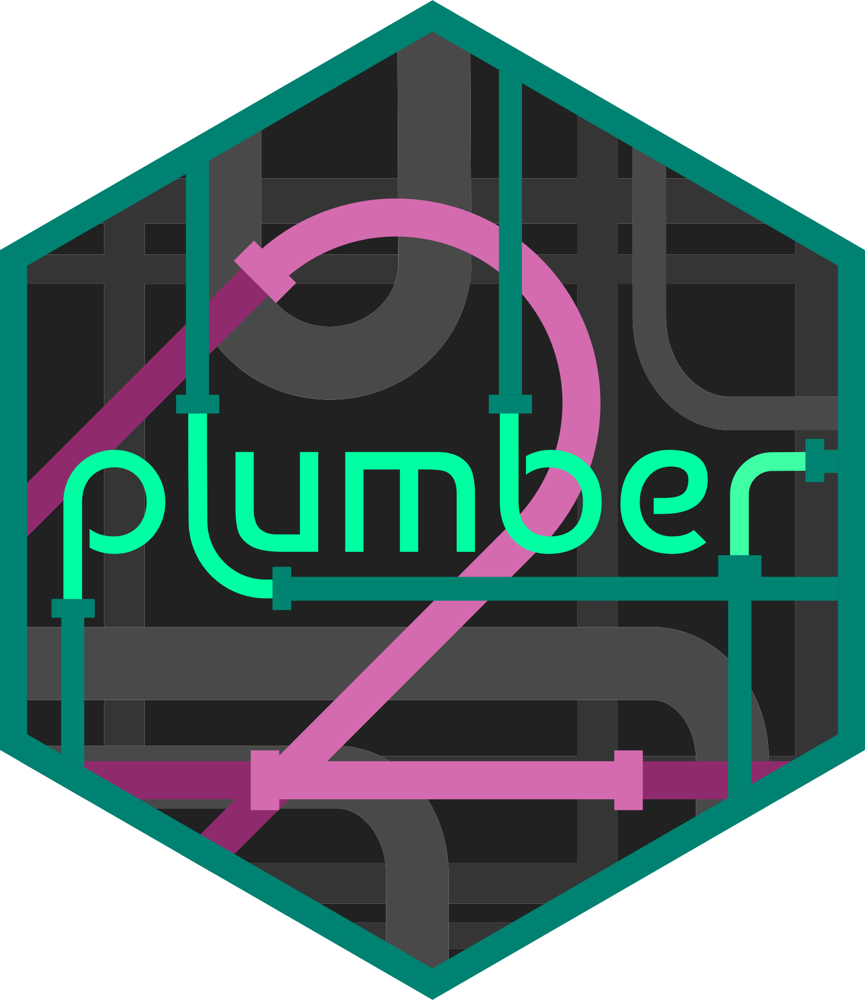
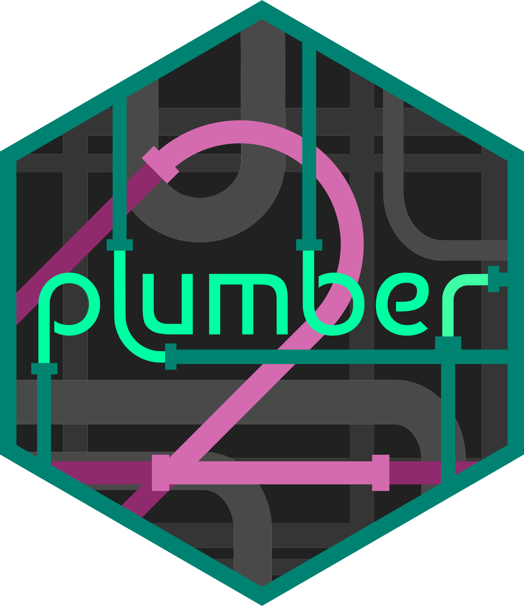

Advances in the Shiny Ecosystem
Oct 9, 2025

mirai.r-lib.org

 



How to Enable

[1]
Install {otel} and {otelsdk}
[2]
Set environment variables
e.g.
OTEL_TRACES_EXPORTER="http"
OTEL_EXPORTER_OTLP_ENDPOINT="https://logfire-eu.pydantic.dev"
OTEL_EXPORTER_OTLP_HEADERS="Authorization=<YOUR-WRITE-TOKEN>"Performance Workflow
Joe Cheng / Shiny in Production (2019) - updated by Barret Schloerke (2025)
- Enable OpenTelemetry to see span durations
- For long spans, use {profvis} to see where code is slow
- Optimize slow code:
- Move work out of Shiny server (very often)
- Make code faster (very often)

- Use caching (sometimes)

- Non-blocking reactivity (sometimes)


- Repeat!
Thanks
Advances in the Shiny Ecosystem